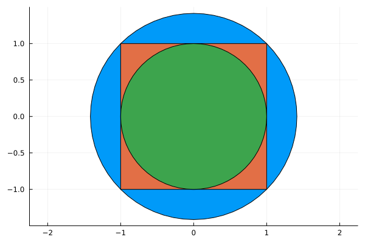
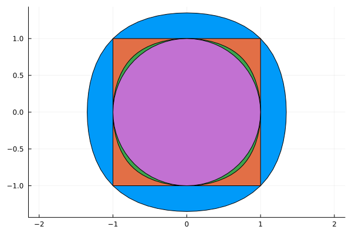
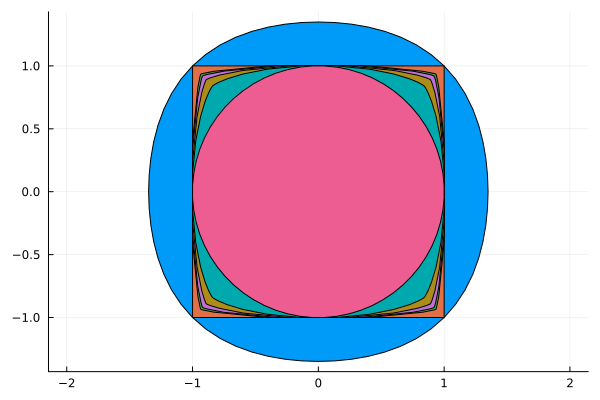
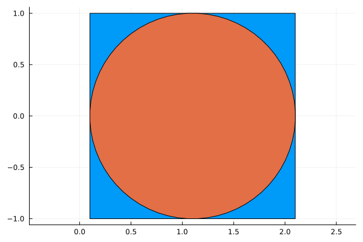

Volume Objective


In this example, we compute the maximal (resp. minimal) volume ellipsoids and polynomial sublevel sets contained in (resp. containing) the square with vertices $(\pm 1, \pm 1)$. We start by defining the square with Polyhedra.
using Polyhedra
h = HalfSpace([1, 0], 1.0) ∩ HalfSpace([-1, 0], 1) ∩ HalfSpace([0, 1], 1) ∩ HalfSpace([0, -1], 1)
p = polyhedron(h)Polyhedron DefaultPolyhedron{Float64, Polyhedra.Intersection{Float64, Vector{Float64}, Int64}, Polyhedra.Hull{Float64, Vector{Float64}, Int64}}:
4-element iterator of HalfSpace{Float64, Vector{Float64}}:
HalfSpace([1.0, 0.0], 1.0)
HalfSpace([-1.0, 0.0], 1.0)
HalfSpace([0.0, 1.0], 1.0)
HalfSpace([0.0, -1.0], 1.0)We need to pick an SDP solver, see here for a list of available ones.
using SetProg
import CSDP
sdp_solver = optimizer_with_attributes(CSDP.Optimizer, MOI.Silent() => true)MathOptInterface.OptimizerWithAttributes(CSDP.Optimizer, Pair{MathOptInterface.AbstractOptimizerAttribute, Any}[MathOptInterface.Silent() => true])John ellipsoid
The maximal volume ellipsoid contained in a convex body is called its John ellipsoid. The John ellipsoid for our square can be computed as follows.
model = Model(sdp_solver)
@variable(model, john, Ellipsoid(symmetric=true, dimension=2))
@constraint(model, john ⊆ p)
@objective(model, Max, nth_root(volume(john)))
optimize!(model)
@show solve_time(model)
@show termination_status(model)
@show objective_value(model)
SetProg.Sets.print_support_function(value(john))solve_time(model) = 0.005500078201293945
termination_status(model) = OPTIMAL
objective_value(model) = 0.9999999996288853
h(S, x) = x[2]^2 + x[1]^2Löwner ellipsoid
The minimal volume ellipsoid containing a convex body is called its Löwner ellipsoid. The Löwner ellipsoid for our square can be computed as follows.
model = Model(sdp_solver)
@variable(model, löwner, Ellipsoid(symmetric=true, dimension=2))
@constraint(model, p ⊆ löwner)
@objective(model, Min, nth_root(volume(löwner)))
optimize!(model)
@show solve_time(model)
@show termination_status(model)
@show objective_value(model)
löwner_value = value(löwner)SetProg.Sets.Ellipsoid{Float64}([0.5000000159896161 2.220446049250313e-16; 2.220446049250313e-16 0.499999983688292])We can visualize the Löwner and John ellipsoids as follows.
using Plots
plot(ratio=:equal)
plot!(löwner_value)
plot!(p)
plot!(value(john))
Higher degree polynomials
Ellipsoids are the sublevel sets of positive definite quadratic forms. To allow for more sophisticated shapes, we instead look for sublevel sets of quartic forms. For this, we simply replace Ellipsoid(dimension=2) by PolySet(degree=4, dimension=2). Note that the quantities optimized are not exactly the volume anymore but provide a reasonable heuristic.
Maximal volume quartic sublevel set contained in the square
model = Model(sdp_solver)
@variable(model, quartic_inner, PolySet(degree=4, symmetric=true, convex=true))
@constraint(model, quartic_inner ⊆ p)
@objective(model, Max, nth_root(volume(quartic_inner)))
optimize!(model)
@show solve_time(model)
@show termination_status(model)
@show objective_value(model)
quartic_inner_value = value(quartic_inner)SetProg.Sets.Polar{Float64, SetProg.Sets.ConvexPolySet{Float64, StarAlgebras.SubBasis{MultivariateBases.Polynomial{Monomial, Vector{DynamicPolynomials.Variable{DynamicPolynomials.Commutative{DynamicPolynomials.CreationOrder}, MultivariatePolynomials.Graded{MultivariatePolynomials.LexOrder}}}, Vector{Int64}}, Int64, Vector{Int64}, StarAlgebras.MappedBasis{MultivariateBases.Polynomial{Monomial, Vector{DynamicPolynomials.Variable{DynamicPolynomials.Commutative{DynamicPolynomials.CreationOrder}, MultivariatePolynomials.Graded{MultivariatePolynomials.LexOrder}}}, Vector{Int64}}, Vector{Int64}, MultivariatePolynomials.ExponentsIterator{MultivariatePolynomials.Graded{MultivariatePolynomials.LexOrder}, Nothing, Vector{Int64}}, MultivariateBases.Variables{Monomial, Vector{DynamicPolynomials.Variable{DynamicPolynomials.Commutative{DynamicPolynomials.CreationOrder}, MultivariatePolynomials.Graded{MultivariatePolynomials.LexOrder}}}}, typeof(MultivariatePolynomials.exponents)}, Vector{Vector{Int64}}}, Float64}}(SetProg.Sets.ConvexPolySet{Float64, StarAlgebras.SubBasis{MultivariateBases.Polynomial{Monomial, Vector{DynamicPolynomials.Variable{DynamicPolynomials.Commutative{DynamicPolynomials.CreationOrder}, MultivariatePolynomials.Graded{MultivariatePolynomials.LexOrder}}}, Vector{Int64}}, Int64, Vector{Int64}, StarAlgebras.MappedBasis{MultivariateBases.Polynomial{Monomial, Vector{DynamicPolynomials.Variable{DynamicPolynomials.Commutative{DynamicPolynomials.CreationOrder}, MultivariatePolynomials.Graded{MultivariatePolynomials.LexOrder}}}, Vector{Int64}}, Vector{Int64}, MultivariatePolynomials.ExponentsIterator{MultivariatePolynomials.Graded{MultivariatePolynomials.LexOrder}, Nothing, Vector{Int64}}, MultivariateBases.Variables{Monomial, Vector{DynamicPolynomials.Variable{DynamicPolynomials.Commutative{DynamicPolynomials.CreationOrder}, MultivariatePolynomials.Graded{MultivariatePolynomials.LexOrder}}}}, typeof(MultivariatePolynomials.exponents)}, Vector{Vector{Int64}}}, Float64}(4, GramMatrix with row/column basis:
SubBasis{Monomial}([x[2]^2, x[1]*x[2], x[1]^2])
And entries in a 3×3 MultivariateMoments.SymMatrix{Float64}:
0.9999999997998911 0.0 -0.18579029009215522
0.0 3.200007690279699 0.0
-0.18579029009215522 0.0 0.9999999997998825, [11.999999997598696 0.0 0.0 8.485281702530704; 0.0 5.6568542201907785 2.8284267378509194 0.0; 0.0 2.8284267378509194 5.656854220190787 0.0; 8.485281702530704 0.0 0.0 11.999999997598524]))Minimal volume quartic sublevel set containing the square
model = Model(sdp_solver)
@variable(model, quartic_outer, PolySet(symmetric=true, degree=4, convex=true))
@constraint(model, p ⊆ quartic_outer)
@objective(model, Min, nth_root(volume(quartic_outer)))
optimize!(model)
@show solve_time(model)
@show termination_status(model)
@show objective_value(model)
quartic_outer_value = value(quartic_outer)SetProg.Sets.ConvexPolySet{Float64, StarAlgebras.SubBasis{MultivariateBases.Polynomial{Monomial, Vector{DynamicPolynomials.Variable{DynamicPolynomials.Commutative{DynamicPolynomials.CreationOrder}, MultivariatePolynomials.Graded{MultivariatePolynomials.LexOrder}}}, Vector{Int64}}, Int64, Vector{Int64}, StarAlgebras.MappedBasis{MultivariateBases.Polynomial{Monomial, Vector{DynamicPolynomials.Variable{DynamicPolynomials.Commutative{DynamicPolynomials.CreationOrder}, MultivariatePolynomials.Graded{MultivariatePolynomials.LexOrder}}}, Vector{Int64}}, Vector{Int64}, MultivariatePolynomials.ExponentsIterator{MultivariatePolynomials.Graded{MultivariatePolynomials.LexOrder}, Nothing, Vector{Int64}}, MultivariateBases.Variables{Monomial, Vector{DynamicPolynomials.Variable{DynamicPolynomials.Commutative{DynamicPolynomials.CreationOrder}, MultivariatePolynomials.Graded{MultivariatePolynomials.LexOrder}}}}, typeof(MultivariatePolynomials.exponents)}, Vector{Vector{Int64}}}, Float64}(4, GramMatrix with row/column basis:
SubBasis{Monomial}([x[2]^2, x[1]*x[2], x[1]^2])
And entries in a 3×3 MultivariateMoments.SymMatrix{Float64}:
0.3017768675059971 -5.696039863571798e-16 -0.10213338624869729
-5.696039863571798e-16 0.6007131040964923 -4.708534184209372e-16
-0.10213338624869729 -4.708534184209372e-16 0.3017768002438282, [3.621322410071955 -3.3190439398090117e-15 -8.185628727061642e-16 1.499999114693928; -3.3190439398090117e-15 0.7928926631981923 0.08578621170247158 -1.0760317525216875e-15; -8.185628727061642e-16 0.08578621170247158 0.792892663198202 -3.0618611928094774e-15; 1.499999114693928 -1.0760317525216875e-15 -3.0618611928094774e-15 3.6213216029259407])We can visualize the quartic sublevel sets as follows.
plot(ratio=:equal)
plot!(quartic_outer_value)
plot!(p)
plot!(quartic_inner_value)
plot!(value(john))
Inner sublevel sets of increasing degree
We can also explore how the inner sublevel set tightens as the degree grows, using the L1_heuristic as a tractable volume proxy.
function inner_L1(d)
model = Model(sdp_solver)
@variable(model, S, PolySet(symmetric=true, degree=d, convex=true))
@constraint(model, S ⊆ p)
@objective(model, Max, L1_heuristic(volume(S), [1.0, 1.0]))
optimize!(model)
@show solve_time(model)
@show termination_status(model)
@show objective_value(model)
return value(S)
end
S2 = inner_L1(2)
S4 = inner_L1(4)
S6 = inner_L1(6)
S8 = inner_L1(8)
S10 = inner_L1(10)
plot(ratio=:equal)
plot!(quartic_outer_value)
plot!(p)
plot!(S10)
plot!(S8)
plot!(S6)
plot!(S4)
plot!(S2)
Non-homogeneous case
For non-symmetric bodies, the John/Löwner ellipsoids are not centered at the origin. We need to provide a point as a hint of an interior point. We illustrate on a horizontally-shifted square.
shift = 1.1
h_shift = HalfSpace([1, 0], 1.0 + shift) ∩ HalfSpace([-1, 0], 1.0 - shift) ∩ HalfSpace([0, 1], 1) ∩ HalfSpace([0, -1], 1)
p_shift = polyhedron(h_shift)
model = Model(sdp_solver)
@variable(model, john_shift, Ellipsoid(point=SetProg.InteriorPoint([shift, 0.0])))
@constraint(model, john_shift ⊆ p_shift)
@objective(model, Max, nth_root(volume(john_shift)))
optimize!(model)
@show solve_time(model)
@show termination_status(model)
@show objective_value(model)
plot(ratio=:equal)
plot!(p_shift)
plot!(value(john_shift))
Likewise for the quartic sublevel set.
model = Model(sdp_solver)
@variable(model, quartic_shift, PolySet(convex=true, degree=2, point=SetProg.InteriorPoint([shift, 0.0])))
@constraint(model, quartic_shift ⊆ p_shift)
@objective(model, Max, L1_heuristic(volume(quartic_shift), [1.0, 1.0]))
optimize!(model)
@show solve_time(model)
@show termination_status(model)
@show objective_value(model)
plot(ratio=:equal)
plot!(p_shift)
plot!(value(quartic_shift))This page was generated using Literate.jl.